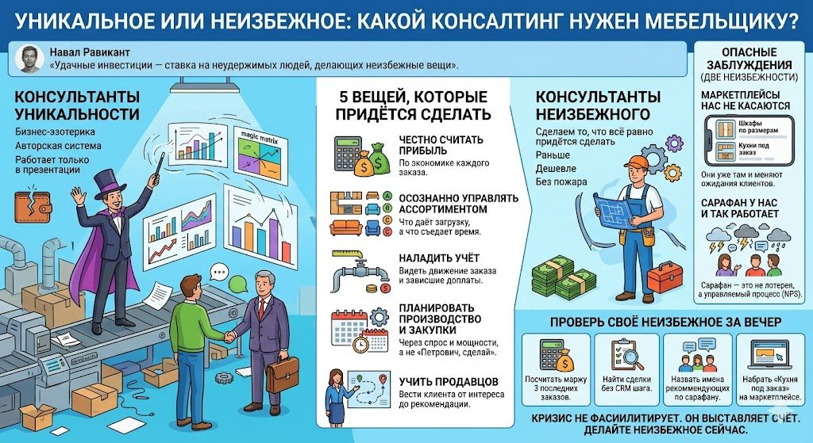

У Наваля Равиканта есть удобная мысль, которую я давно ношу с собой: удачные инвестиции означают ставку на неудержимых людей, которые делают неизбежные вещи. По-моему, это заодно и лучшее описание нормального консалтинга, какое мне попадалось.
Одни консультанты приходят к владельцу мебельного производства и торжественно сообщают, что сейчас покажут уникальную методику, которой нет ни у кого на рынке. После этой фразы я обычно проверяю взглядом, где лежит кошелёк, потому что дальше почти всегда начинается бизнес-эзотерика: авторская система, секретная технология, волшебная матрица и фреймворк, который прекрасно работает в презентации, но в цеху отчего-то рассыпается.

Другие консультанты предлагают кое-что гораздо менее эффектное. Они говорят примерно так: давайте сделаем то, что вам всё равно придётся сделать, просто сделаем это раньше, дешевле и без пожара, судорог и кредита под неприятный процент. Вот это и есть неизбежные вещи, и в мебельном бизнесе на заказ их сейчас накопилось прилично.
Пять вещей, которые придётся сделать в любом случае
Прибыль придётся считать честно. Не по ощущению «вроде нормально работаем», а по экономике каждого заказа, где видны материалы, фурнитура, распил, доставка, монтаж, переделки, реклама и стоимость денег, замороженных в незавершёнке.
Ассортиментом придётся управлять осознанно. Понимать, какие типы заказов приносят деньги, какие дают загрузку цеха, какие создают геморрой, а какие просто съедают время конструктора, как старый диван съедает место у тёщи.
Учёт придётся наладить. Так, чтобы видеть, что замерили, что запустили в производство, что смонтировали, что приняли по акту, где зависли доплаты и какая рекламация тихо съела маржу всего объекта.
Производство и закупки придётся планировать. Через спрос, остатки, сроки и реальные мощности, а не по принципу «Петрович, сделай как в прошлый раз».
Продавцов придётся учить. Не «продавать кухню», а вести клиента от первого интереса до оплаты, замера, монтажа и — что важнее всего — до следующего заказа и до рекомендации.
Внимательный читатель этой брошюры заметит, что почти под каждым пунктом в ней уже есть отдельная статья: про ассортимент, который в кризис надо не усложнять, а упрощать, про фразу «я же держал это в голове», которая стоит компаниям дороже всего, про CRM, где «думает, перезвонить» — это надгробие сделки, а не запись. Это не совпадение и не самоцитирование от бедности. Неизбежное на то и неизбежное, что у всех вылезает в одних и тех же местах.
Список можно продолжать, но есть два пункта, насчёт которых мебельщики на заказ особенно уверены в себе — настолько, что эти пункты обычно даже не попадают в список. Первый звучит как «маркетплейсы нас не касаются». Второй — как «сарафан у нас и так работает». Обе уверенности объединяет то, что они дорого обходятся.
Уверенность первая: «маркетплейсы нас не касаются»
Начнём с маркетплейсов, потому что здесь отрицание достигает художественных высот. Почти каждый владелец производства на заказ скажет вам спокойно и даже снисходительно: мы делаем мебель по индивидуальным проектам, под размеры конкретной квартиры, с замерщиком и дизайнером — какой тут может быть маркетплейс.
Звучит убедительно ровно до того момента, пока не зайдёшь на эти самые маркетплейсы и внимательно не посмотришь. А там уже продаются шкафы по вашим размерам, кухни под заказ с бесплатным замером в карточке товара, модульные системы, из которых клиент сам собирает гарнитур за вечер, и продавцы, которые научились упаковывать «индивидуальность» в стандартную карточку с рейтингом, отзывами и рассрочкой.
Несколько лет назад то же самое говорили продавцы готовой корпусной мебели: наш диван никто не купит по картинке, его же надо потрогать. Покупают, и ещё как.
Маркетплейс не спрашивает у отрасли разрешения. Он просто приучает клиента к мысли, что мебель выбирают с телефона за вечер, и это меняет ожидания даже тех, кто в итоге придёт к вам в салон: они приходят с чужими ценами в голове, с привычкой доверять рейтингу больше, чем менеджеру, и с вопросом, почему у вас замер платный, если «там» бесплатный. Это ровно тот случай, о котором написано в первой главе этой брошюры: рынок меняется быстрее, чем компания — мебельщик делает всё как раньше, даже лучше, а продаёт хуже.
Так что неизбежность тут не в том, что вам завтра нужно открывать магазин на Ozon. Неизбежность в том, что разобраться, как эта машина перемалывает ваш рынок и ваших клиентов, придётся в любом случае: либо чтобы использовать её, либо чтобы внятно от неё отстроиться.
Уверенность вторая: «сарафан у нас и так работает»
Почти каждый владелец фабрики на заказ с гордостью скажет, что половина клиентов приходит по рекомендации. Следующий вопрос ставит большинство в тупик: а сколько именно, от кого, после какого момента в работе и что конкретно вы сделали, чтобы человек о вас рассказал?
Тут обычно повисает тишина, потому что сарафан есть, а системы за ним нет. Поэтому он ведёт себя как погода: иногда льёт, иногда сушь, а управлять им вроде как неприлично — это же стихия.
Разберём живую сцену. Семья въезжает в новую квартиру в ЖК «Облака», заказывает кухню; замерщик приехал вовремя, монтажники не нахамили, фасады без сколов. Хозяйка довольна и через неделю в родительском чате хвалит вашу фабрику соседке, та заказывает шкаф-купе — и вот вам та самая «половина клиентов по рекомендации». А теперь честно: вы хоть раз сознательно спроектировали этот момент? Знаете, что именно у этой хозяйки щёлкнуло, что заставило её рассказать о вас не из вежливости, а с удовольствием? Чаще всего нет. Повезло с монтажниками, повезло с настроением, повезло, что соседка как раз затеяла ремонт.
А теперь вторая сцена, которую владельцы знают наизусть, но предпочитают не вспоминать. Тот же ЖК, та же кухня, но монтаж перенесли дважды, мастер пришёл сонный и злой, а на возражение клиента менеджер ответил «ну а что вы хотели за эти деньги». Эта хозяйка тоже расскажет о вас в чате. Только теперь сарафан работает в обратную сторону, и один такой отзыв глушит пять восторженных, потому что плохое люди пересказывают охотнее, подробнее и с удовольствием.
Сарафан придётся превращать из погоды в процесс
Вот это и есть неизбежная вещь. Сарафаном придётся заняться всерьёз, потому что стоимость привлечения клиента через рекламу растёт, а рекомендация по-прежнему обходится почти бесплатно и приводит человека, который уже наполовину согласен и меньше торгуется.
Вопрос не в том, нужен ли вам сарафан. Вопрос в том, останется ли он лотереей или станет управляемым процессом: с понятными точками, где рождается доверие; с моментами, которые клиент запоминает и хочет пересказать; с замером удовлетворённости не «на глазок», а через нормальные показатели вроде NPS — причём не сразу после оплаты, а через несколько месяцев после монтажа, когда эйфория прошла и человек живёт с вашей мебелью каждый день.
У управляемого сарафана даже есть своя главная цифра: сколько новых клиентов в среднем приводит один довольный. Она считается на последних пятидесяти заказах за один вечер, и владельцы, которые делают это впервые, обычно удивляются дважды: сначала тому, какая доля выручки на самом деле держится на рекомендациях, а потом тому, что этим каналом у них никто никогда не управлял.
Собственно, об этом я в итоге и собрал отдельный курс — про системное управление сарафаном в мебели на заказ, — потому что устал объяснять одно и то же на пальцах. Но дело не в курсе. Дело в том, что эту работу всё равно придётся проделать, со мной или без меня, спокойно сейчас или в панике потом.
Клиент не хочет слышать неизбежное
В тот же список неизбежного попадают CRM, сквозная аналитика, вменяемые отчёты и регулярное управление. Не потому что это модно, а потому что ручное управление бизнесом в кризис превращается в игру «угадай, где сегодня протечёт».
То есть вторые консультанты приходят не с фокусом, а с неприятной ясностью. И вот тут начинается главная трудность, потому что клиент чаще всего не хочет слышать неизбежное. Он хочет услышать другое: как быстро поднять продажи, как найти новый канал, как заставить рекламу снова работать, как победить конкурентов. А правильный ответ звучит обидно скучно: начните считать, уберите мусор из ассортимента, закройте дыры в учёте, перестаньте продавать в минус, разберите путь клиента, превратите рекомендации в систему, смотрите отчёты каждый день — а не после того, как банк уже кашляет в трубку.
И клиент думает: ну это мы и так знаем. Да, знаете, но почему-то не делаете; а если делаете, то нерегулярно; а если регулярно, то по кривым данным; а если данные нормальные, то решения всё равно принимаются «по чуйке», «по рынку» и «потому что я двадцать лет в мебели». Опыт сам по себе полезен, но в кризис один опыт без системы превращается в музей боевой славы: экскурсии интересные, а денег нет.
В одной из предыдущих глав этой брошюры я уже разбирал самую дорогую отмазку кризиса — «у меня нет на это времени». Так вот, «это мы и так знаем» — её родная сестра. Обе фразы звучат как позиция взрослого человека, и обе стоят дороже любого упущенного контракта, потому что упущенный контракт виден, а упущенный год — нет.
Очевидным неизбежное становится только задним числом
Парадокс в том, что самые сильные консультационные решения не выглядят гениальными. Они выглядят очевидными — но только после того, как их сделали. Пока не сделали, они кажутся скучными, трудными и «не про нас».
Платёжный календарь банален. Утренний отчёт по ключевым показателям похож на детский сад. Изучение маркетплейсов кажется чужой войной. Просьба сознательно работать с рекомендациями вообще звучит как блажь, ведь «у нас и так все клиенты довольные». Проходит полгода, и внезапно выясняется, что именно это и надо было делать, только теперь уже не спокойно, а в режиме «срочно спасаем то, что ещё шевелится».
Как за один вечер найти своё неизбежное
Чтобы разговор не остался теорией, вот четыре проверки. На все хватит одного вечера и одного честного настроения.
Первая. Возьмите три последних сданных заказа и посчитайте по каждому честную маржу — с переделками, доставкой, рекламой и стоимостью денег, замороженных в незавершёнке. Если цифра не собирается за час, первый пункт вашего списка найден.
Вторая. Откройте CRM и посчитайте, сколько сделок висит без следующего шага с датой. Если CRM нет — пункт найден ещё быстрее.
Третья. Ответьте себе: сколько клиентов за последние полгода пришло по рекомендации, от кого именно и после какого момента в работе. Не «примерно половина», а по именам. Не отвечается — вот и третий пункт.
Четвёртая. Зайдите на любой маркетплейс и наберите «кухня под заказ» и название вашего города. Двадцать минут честного чтения карточек заменяют квартал отраслевых конференций.
Каждый пункт, на котором вы споткнулись, — не повод для самобичевания. Это и есть ваш персональный список неизбежного. Дальше вопрос только один: займётесь вы им сейчас по своей воле или потом по приказу обстоятельств.
Кризис не фасилитирует. Он выставляет счёт
Поэтому я всё больше думаю, что работа консультанта не в том, чтобы придумывать клиенту уникальное. Уникальное клиент и сам себе придумает, особенно в пятницу вечером после тяжёлой недели. Работа консультанта в том, чтобы увидеть, что в бизнесе неизбежно должно измениться, и помочь сделать это раньше, чем рынок заставит сделать то же самое, но грубее, дороже и без смазки.
Кризис в мебельном бизнесе сейчас как раз про это. Он не спрашивает, хотите ли вы считать маржинальность каждого заказа, понимать, что маркетплейсы делают с ожиданиями ваших клиентов, и превращать довольных заказчиков в источник новых. Он просто выставляет счёт. И если компания не сделала неизбежные вещи сама, за неё это сделают обстоятельства, а из обстоятельств консультант никудышный: они не фасилитируют, не рисуют схемы и не предлагают аккуратно пройти трансформацию. Они просто приходят и сообщают, что теперь будет больно.
Так что сформулирую прямо. Одни консультанты продают оригинальность. Другие продают своевременность неизбежного: помогают сделать сегодня то, что завтра станет обязательным, послезавтра срочным, а через месяц уже запоздалым. Вторых труднее слушать, и в этом их вечная драма: пока они правы, кажется, что они говорят банальности, а когда их правота стала очевидна всем, делать всё это спокойно уже поздно.
В этой брошюре есть отдельная глава о том, что ничего не изменится, если мебельщики ничего не изменят. Эта статья — о том же самом, только из другого кресла: из кресла человека, которого зовут, когда откладывать уже не получается.
В этом и есть профессиональный кайф и профессиональная драма этой работы. Ты приходишь не с чудом, а с лопатой, фонариком и неприятным вопросом: "Давайте-ка посмотрим, где у вас тут уже давно пора было копать?"